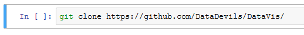

Visualization tools take many forms. An excellent article comparing the leading visualization packages is here: http://pbpython.com/visualization-tools-1.html.
While our attempt to learn Python in 5 (well 20) minutes last session was fairly fantastical, getting a full grasp of Python's plotting and visualization capabilities in under an hour is even more ridiculous. I've been digging in myself for several weeks and still feel only slightly competent! Constructing visualizations via code simply has many, many moving parts and thus has a bit of a steep learning curve.
So. Rather than attempt even a cursory survey of the Python visualization packages, we are going to keep things simple here and just do a gentle introduction using a bit of matplotlib (the so-called 'grandfather' of Python visualization packages), Pandas, and Seaborn. This should get you beyond the initial hump in the learning curve and also provide context for a discussion on the key elements of constructing visualizations. I'm afraid to say that, just past this initial introduction, this initial bump, is a much more complicated discussion of figures and axes, the grammar of graphics, and a host of installation and setup hoops that would take much longer than a few hours to get past successfully. That said, we've provided a number of visualization examples in the scripts and notebooks presented in previous sessions.
Not to confuse matters more, but we'll also look at ggplot (via the Plotnine package). This is yet another plotting approach with a steep learning curve, but this one is quite consistent between R and Python.
And now, let's dive in. You'll need to fire up your Python Jupyter container and upload the Jupyter notebooks we'll be using. Here's the lowdown:
New ▼ and select Bash to create a new Bash script.git clone https://github.com/DataDevils/DataVis/
Hit ►| to run the script which will download the notebook and data you need for the lesson. These will be stored in a folder called DataVis in your Juptyer environment.
Close the Bash script.
Open the DataVis folder and open the Visualization-in-Python.ipynb notebook. We'll do the rest from there...